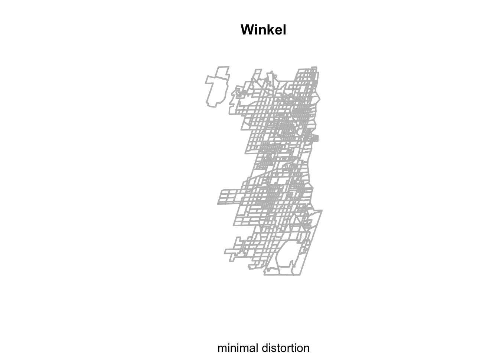

4 Adding Resources
4.1 Geocode
First we load the tidygeocoder to get our geocoding done. Note, this uses the interent to process, so is not suitable for HIPPA protected data like individual, living person addresses.
## Warning: package 'tidygeocoder' was built under R version 3.6.2Let’s read in and inspect data for methadone (evidenes based medication for opioid use disorder) providers. These addresses were made available by SAMSHA.
## X Name
## 1 1 Chicago Treatment and Counseling Center, Inc.
## 2 2 Sundace Methadone Treatment Center, LLC
## 3 3 Soft Landing Interventions/DBA Symetria Recovery of Lakeview
## 4 4 PDSSC - Chicago, Inc.
## 5 5 Center for Addictive Problems, Inc.
## 6 6 Family Guidance Centers, Inc.
## Address City State Zip
## 1 4453 North Broadway st. Chicago IL 60640
## 2 4545 North Broadway St. Chicago IL 60640
## 3 3934 N. Lincoln Ave. Chicago IL 60613
## 4 2260 N. Elston Ave. Chicago IL 60614
## 5 609 N. Wells St. Chicago IL 60654
## 6 310 W. Chicago Ave. Chicago IL 60654Let’s geocode one address first, just to make sure our system is working. We’ll use the “cascade” method which use the US Census and OpenStreetMap geocoders.
sample <- geo("2260 N. Elston Ave. Chicago, IL", lat = latitude, long = longitude, method = 'cascade')
head(sample)## # A tibble: 1 x 4
## address latitude longitude geo_method
## <chr> <dbl> <dbl> <chr>
## 1 2260 N. Elston Ave. Chicago, IL 41.9 -87.7 censusAs we prepare for geocoding, check out the structure of the dataset. Do we need to change anything? The data should be a character to be read properly.
## 'data.frame': 27 obs. of 6 variables:
## $ X : int 1 2 3 4 5 6 7 8 9 10 ...
## $ Name : Factor w/ 25 levels "*","A Rincon Family Services",..: 5 25 23 21 3 8 2 1 14 24 ...
## $ Address: Factor w/ 27 levels "110 E. 79th St.",..: 20 21 17 6 23 10 16 3 5 8 ...
## $ City : Factor w/ 1 level "Chicago": 1 1 1 1 1 1 1 1 1 1 ...
## $ State : Factor w/ 1 level "IL": 1 1 1 1 1 1 1 1 1 1 ...
## $ Zip : int 60640 60640 60613 60614 60654 60654 60651 60607 60607 60616 ...We need to clean the data a bit. We’ll add a new column for full address, as required by the geocoding service. When you use a geocoding service, be sure to read the documentation and understand how the data needs to be formatted for input.
methadoneClinics$fullAdd <- paste(as.character(methadoneClinics$Address),
as.character(methadoneClinics$City),
as.character(methadoneClinics$State),
as.character(methadoneClinics$Zip))We’re ready to go! Batch geocode with one function:
geoCodedClinics <- geocode(methadoneClinics,
address = 'fullAdd', lat = latitude, long = longitude, method = 'cascade')
head(geoCodedClinics)## # A tibble: 6 x 10
## X Name Address City State Zip fullAdd latitude longitude geo_method
## <int> <fct> <fct> <fct> <fct> <int> <chr> <dbl> <dbl> <chr>
## 1 1 Chicag… 4453 No… Chic… IL 60640 4453 N… NA NA osm
## 2 2 Sundac… 4545 No… Chic… IL 60640 4545 N… NA NA osm
## 3 3 Soft L… 3934 N.… Chic… IL 60613 3934 N… 42.0 -87.7 census
## 4 4 PDSSC … 2260 N.… Chic… IL 60614 2260 N… 41.9 -87.7 census
## 5 5 Center… 609 N. … Chic… IL 60654 609 N.… 41.9 -87.6 census
## 6 6 Family… 310 W. … Chic… IL 60654 310 W.… 41.9 -87.6 censusThere were two that didn’t geocode correctly. You can either inspect further, change the addresses, searching the address and pulling the lat/long using Google Maps and inputting manually, or omit. For this exercise we’ll just omit the two clinics that didn’t geocode correctly.
4.2 Convert to Spatial Data
This is not spatial data yet! To convert a static CSV file to spatial data, we use the powerful st_as-sf function from sf. Indicate the x,y parameters (longitude, latitude) and the coordinate reference system used. Our geocoding service used the standard EPSG:4326, so we input that here.
## Warning: package 'sf' was built under R version 3.6.2## Linking to GEOS 3.7.2, GDAL 2.4.2, PROJ 5.2.04.3 Basic Map of Points
For a really simple basemap of points – to ensure they were geocoded and converted to spatial data correctly, we use tmap. We’ll use the interactive version to view.
## Warning: replacing previous import 'sf::st_make_valid' by
## 'lwgeom::st_make_valid' when loading 'tmap'## tmap mode set to interactive viewing## Warning in `$.crs`(gm$shape.master_crs, "proj4string"): CRS uses proj4string,
## which is deprecated.If your points didn’t plot correctly:
- Did you flip the longitude/latitude values?
- Did you input the correct CRS?
Those two issues are the most common errors.
4.4 Overlay Points & Style
Let’s add our zip code map from the previous module. First load the data, then overlay.
## Reading layer `ChiZipMaster1' from data source
## `/Users/maryniakolak/code/Intro2RSpatialMed/data/ChiZipMaster1.geojson'
## using driver `GeoJSON'
## Simple feature collection with 60 features and 31 fields
## Geometry type: MULTIPOLYGON
## Dimension: XY
## Bounding box: xmin: -87.87596 ymin: 41.64454 xmax: -87.52414 ymax: 42.02304
## CRS: 4326With this overlay, we’ll add a “hack” to include the methadone clinic points in a legend.
## tmap mode set to plotting## 1st layer (gets plotted first)
tm_shape(Chi_Zipsf) + tm_fill("Case.Rate...Cumulative",
style="jenks", pal="BuPu", n=4, title = "COVID Rt") +
## 2nd layer (overlay)
tm_shape(methadoneSf) + tm_dots(size = 0.2, col = "gray20") +
tm_add_legend("symbol", col = "gray20", size = .2, labels = "Methadone MOUD") +
tm_layout(legend.outside = TRUE, legend.outside.position = "right", title.snap.to.legend = TRUE)